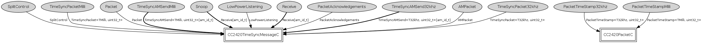

Component: tos.platforms.telosa.TimeSyncMessageC
configuration TimeSyncMessageC
The Active Message layer on the telosa platform. This is a naming wrapper
around the CC2420 Active Message layer that implemets timesync interface (TEP 133).
- Author:
-
Philip Levis
-
Brano Kusy
- Date:
-
June 19 2005
Provides
interface
Receive as
Snoop[am_id_t]
interface
TimeSyncAMSend<T32khz, uint32_t> as
TimeSyncAMSend32khz[am_id_t]
interface
TimeSyncAMSend<TMilli, uint32_t> as
TimeSyncAMSendMilli[am_id_t]
Wiring
